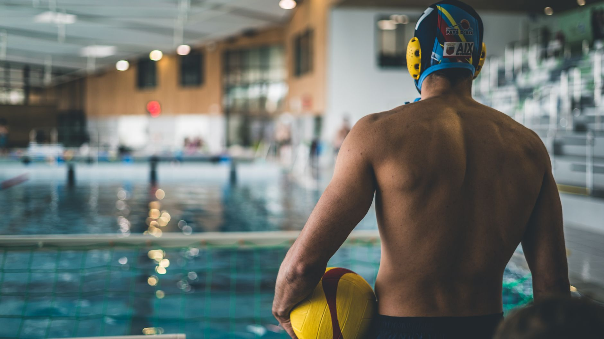

A College Roster Spot Is Earned Long Before Senior Year
When Fordham University recently announced its newest water polo recruiting class, it shone a spotlight on something that every youth aquatic sports family should understand: the road to a college roster is built over years, not months. For young athletes in the Wesley Chapel, Land O' Lakes, and greater Tampa Bay area, news like this is both inspiring and instructive.
Collegiate programs are actively identifying and evaluating players earlier than many families expect. Coaches at schools across the country are watching club rosters, tournament results, and training footage long before a young athlete ever steps foot on a campus visit. That means the work young players put in today — in the pool, in the weight room, and in the classroom — is already part of their recruiting story.
What College Coaches Are Actually Looking For
It is easy to assume that recruiting comes down entirely to athletic ability, but the full picture is far more nuanced. College water polo coaches evaluate a combination of factors when building their rosters, and understanding those factors gives young athletes a meaningful advantage.
- Technical skill and game IQ: Coaches want players who understand the game beyond basic mechanics — athletes who read the defense, communicate with teammates, and make smart decisions under pressure.
- Physical development and coachability: Raw athleticism matters, but so does a player's willingness to be coached. Young athletes who embrace feedback and show steady improvement stand out.
- Academic standing: Division I, II, and III programs all have academic requirements, and many coaches will not recruit a player who is not in good academic standing.
- Character and team culture fit: Coaches are building a program, not just filling positions. Players who demonstrate leadership, resilience, and genuine team-first attitudes are highly attractive to recruiters.
When Should Young Athletes Start Thinking About Recruiting?
There is no single correct answer, but most college coaches recommend that families begin doing their research by the time a player enters eighth or ninth grade. This does not mean sending emails to every Division I program in the country at age thirteen. It means beginning to build the foundation — developing skills, competing at a higher level, maintaining grades, and understanding what the recruiting timeline looks like for water polo specifically.
The NCAA has specific rules around when coaches can contact athletes, what can be communicated, and when official visits can occur. Families who educate themselves on these timelines early are far better prepared when the process begins in earnest.
How the Right Training Environment Makes a Difference
One of the most important decisions a family can make is choosing a training program that prioritizes both athletic development and the whole athlete. At Nexar Aquatic Academy, young athletes in Wesley Chapel and Land O' Lakes train in an environment built around long-term development — not just wins and losses. Quality coaching, structured skill progression, and a culture of accountability are the kinds of building blocks that college coaches notice.
Whether a young player dreams of competing at Fordham, a Florida university, or any other collegiate program, the habits they build now will define what doors open later.
Your Next Step as a Family
If your young athlete has college ambitions, start the conversation early. Talk to their coaches about where their game needs to grow. Research programs that align with their academic and athletic goals. And make sure they are training in an environment that will prepare them for the demands of the next level.
Nexar Aquatic Academy is here to support young athletes across the Tampa Bay area on that journey — one practice, one game, and one goal at a time.
Ready to get in the water?
First practice is completely FREE — no commitment needed.